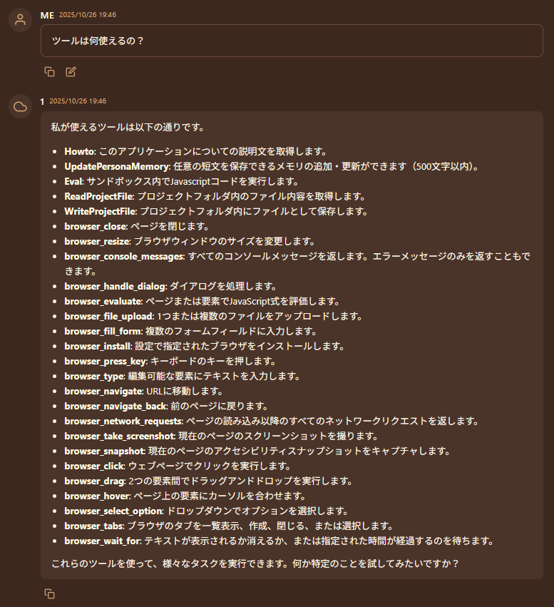
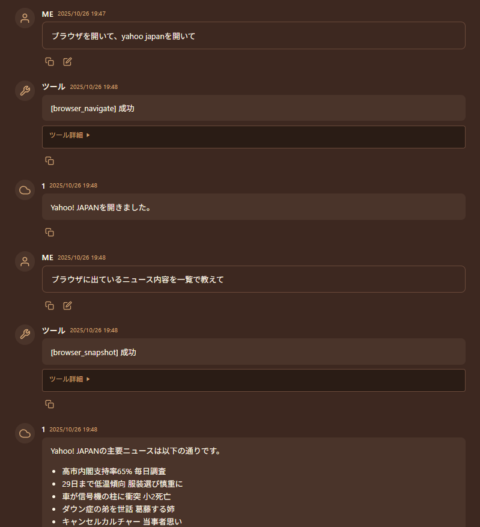

MCPツール
本アプリケーションは、MCPツールを使って機能を拡張できます。
MCP: Model Context Protocolは、AIの機能を拡張するための規格です。
さまざまなツールやシステムと連携させることで、AIに様々なことをさせることが出来ます。
例として (これらは動作保証ではありません)
- mcp-gemini-cli: Gemini CLIを使って検索などができます。
- switch-bot-mcp-server: 家電などをAIに制御させたり、気温を確認してもらったり出来ます。
- playwright-mcp: ブラウザを開いて走査してもらうことが出来ます。Webサイトのデバッグなどに。
- firecrawl-mcp-server: ネットを横断検索したり調査してもらうことが出来ます。
- Gmail-MCP-Server: gmailを読んだりメールを遅らせたり出来ます。
Danger
利用するツールによっては、PCを破壊したり、火災を起こしたり、玄関の鍵を開けたり、さまざまなことを起こしてしまうことが出来ます。
外部ツールの挙動に関して、本アプリケーションでは一切の制御ができず、一切の責任を負いません。
危険性を理解したうえで、安全な範囲でツールを連携させてください。
有効化
システム設定画面から、以下の設定を有効にします。
MCPツール連携を有効化 (EnableMcpTools)
Model Context Protocolに対応した外部ツールとの連携を有効にします。dataフォルダ内のmcp.jsonに設定を記述する必要があります。
mcp.jsonに書き方
cursor仕様に従います。
各ソフトを実行するために前提となるソフトウェア(uvやnpxなど)を入れる必要があります。
MCPサーバーは複数登録することが出来ます。ローカル/リモート両対応です。
最低限の呼び出し機能だけ対応しているため、高度な機能を前提としているMCPサーバーは動作しないことがあります。
起動時に一気に読み込むため、起動に時間がかかるようになるかもしれません。
(追加した後は、再起動してください)
例
正常に読み込まれたかは、
- ログを確認する
- 「ツールは何使えるの？」と聞いてみる
ことでわかります。

